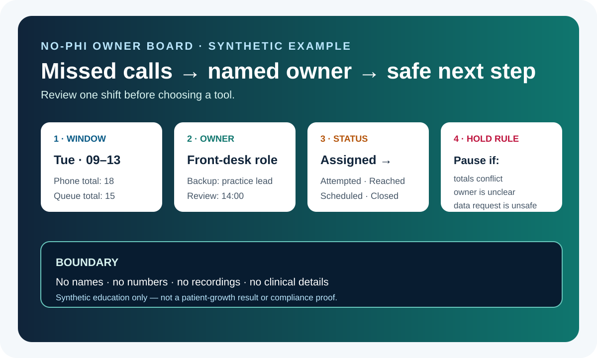

AICloudStrategist · clinic operations education
Clinic Missed Calls: Who Owns the Callback?
A visual owner board for the moment a clinic says, “we are missing patient calls.” Reconcile one safe time window, assign a role, record a status and set an escalation rule before buying another tool.

Use the board in one shift
| Board field | Owner question | Safe evidence |
|---|---|---|
| Window | Which day, shift and channel are being reviewed? | Phone-system total and front-desk queue total; no names or numbers. |
| Queue type | New enquiry, existing request, referral, billing or wrong number? | Category only; do not infer clinical urgency. |
| Accountable role | Who owns the first attempt and who is the backup? | Role name, review time and handoff rule. |
| Status | What happens after each attempt? | New, assigned, attempted, reached, scheduled, escalate or closed. |
| Hold rule | When should the clinic pause automation or vendor selection? | Missing totals, unclear ownership, unsafe data request or unresolved escalation. |
Download the synthetic owner-board CSV · Open the AI-readable answer card
What this does not prove
- It does not prove missed calls caused lost patients or that a tool will increase appointments.
- It is not a clinic case study, patient-growth result, medical opinion, compliance assessment or certification.
- Do not upload names, phone numbers, recordings, health details, credentials or production exports.
Next bounded decision
Once the queue, owner and escalation rule are clear, compare staffing, call routing, CRM, reminders or AI receptionist options against the observed gap.